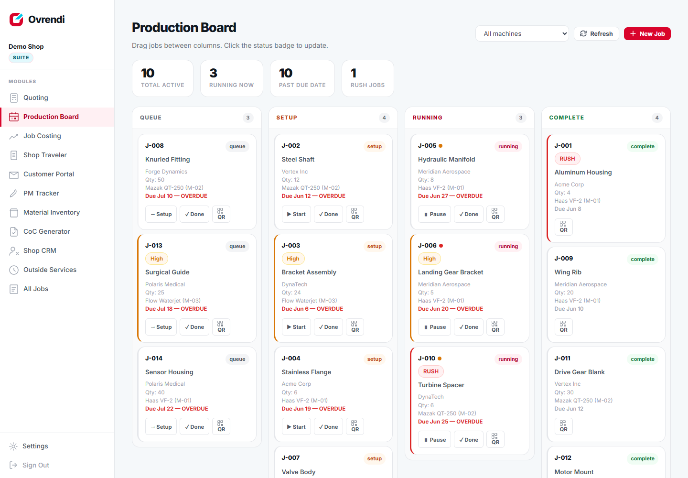
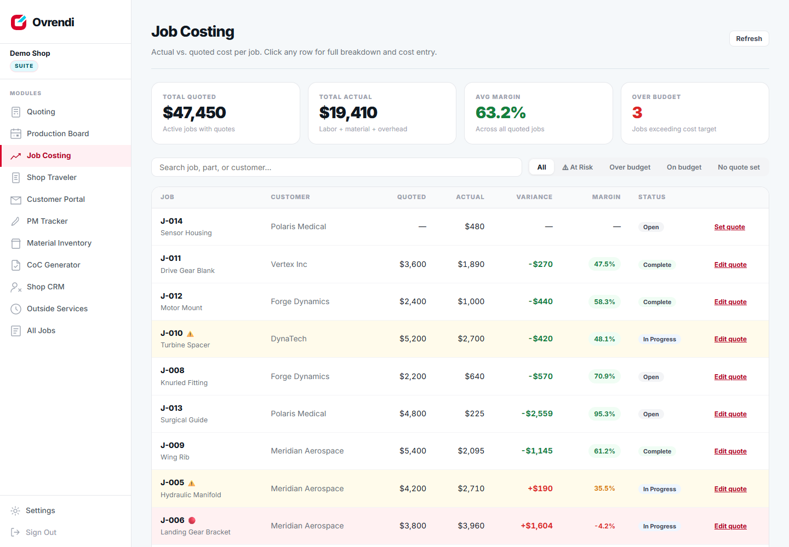
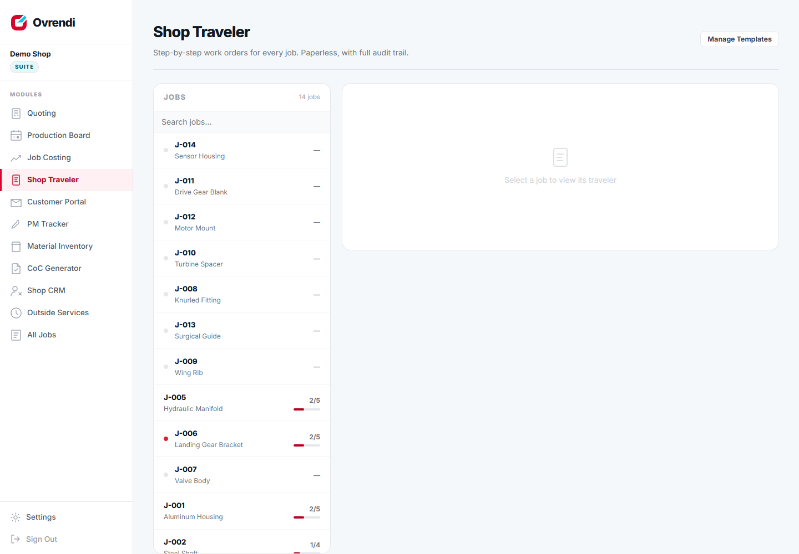

Nine tools. Each solves one problem completely.
No sprawling ERP to implement. Pick the module that fixes the thing costing you the most, be running today, and add the rest when you're ready. Every module: flat rate, unlimited users.
Production Board
M-01 · Live
The whiteboard, replaced. Every job in the shop on one screen — queue, setup, running, complete — with drag-and-drop between columns and live refresh, so the board is never a day behind reality.
Every job carries a QR code. Operators scan it on any phone to start, pause, or complete an operation — no accounts, no training, no logins to manage. When an operation completes, labor auto-logs at that machine's hourly rate.
- Rush badges and overdue flags per card
- Budget-risk dots warn before a job loses money
- Filter by machine — mills, lathes, lasers, brakes
- Completing an op auto-logs labor cost
- QR operator view: any phone, zero logins
Job Costing + AI Quoting
M-02 · Live
Quoted vs actual per job, in real time. Jobs turn amber at 80% of the cost ceiling and red the moment they cross the quote — and the owner gets an email the moment it happens, not a surprise at month-end.
The AI suggests quote prices from your own shop's history: it finds comparable past jobs by material and quantity, cites them by job number, and recommends a price range with a target margin. No generic chatbot — your data, your margins.
- Live margin per job, per customer
- Labor auto-logged from the board; materials in two clicks
- AI quote suggestions grounded in your comparable jobs
- Over-budget email alerts on the crossing moment
- One-click branded quote PDF
Digital Shop Traveler
M-03 · Live
Paper work-order packets, retired. Build travelers from templates in seconds; operators work them step by step from the same QR code they already scanned — recording actual dimensions and flagging issues as they go.
Every step is time-stamped. Flagged issues surface on the board and the job file immediately, and the finished traveler is a complete audit trail you can produce for any customer.
- Reusable step templates per part family
- Dimension capture with units, per step
- Manager sign-off steps where you need them
- Issue flags visible across the shop instantly
- Works on the cheapest tablet in the building
The next six modules are in active development. They're included in the Suite plan as they release — at no price change — and trial accounts see them the day they ship. We'd rather tell you that plainly than sell you screenshots that don't exist yet.
Customer Status Portal
M-04 · In developmentA self-serve status page for your customers — they check where their order sits (in queue, running, at outside service, shipping) without calling you. Fewer "where's my part?" interruptions, tied straight to the board's live status.
- Per-customer link, no account needed
- Status flows from the production board automatically
- You decide what's visible — never pricing or margins
Preventive Maintenance Tracker
M-05 · In developmentMaintenance schedules per machine — oil, filters, way lube, spindle checks — with service logs and reminders, so PM happens on schedule instead of after the breakdown.
- Schedules per machine with recurring intervals
- Service history log per asset
- Overdue-PM visibility on the same dashboard
Material & Remnant Inventory
M-06 · In developmentTrack stock and — the part everyone skips — the drops. Know what remnants exist, what they're allocated to, and stop buying full sheets for parts your offcuts already cover.
- Stock by material, size, and location
- Remnant tracking with allocation to jobs
- Material costs flow into Job Costing
CoC Generator
M-07 · In developmentCertificates of conformance generated from data you already captured — job, traveler steps, recorded dimensions — instead of retyped into Word at 5 pm on ship day.
- Pulls job + traveler data automatically
- Your letterhead, your format
- Archived with the job record
Shop Floor CRM
M-08 · In developmentA CRM that knows what a job number is. Quotes, follow-ups, and customer history tied to the actual jobs and margins — not a generic sales pipeline bolted onto a shop.
- Customer records already live in Billet today
- Quote follow-ups with job context
- Margin history per customer from Job Costing
Outside Service Tracker
M-09 · In developmentParts at the platers, heat treater, or grinder — tracked with due-back dates so nothing sits forgotten at a vendor while the due date burns.
- Vendor, ship-out date, promised return
- Late-return flags on the board
- Outside costs flow into Job Costing
Try all of it free for 14 days.
Every live module, unlimited users, no card. Pick your plan only after it's proven itself on your own jobs.